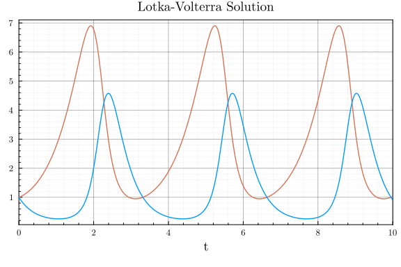
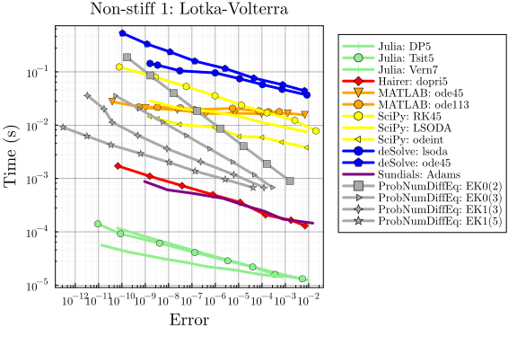
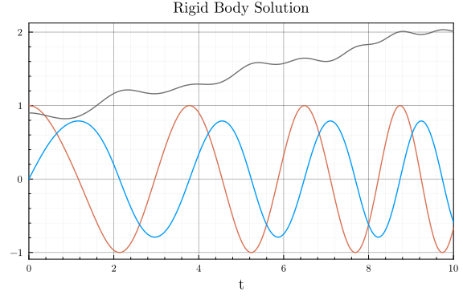
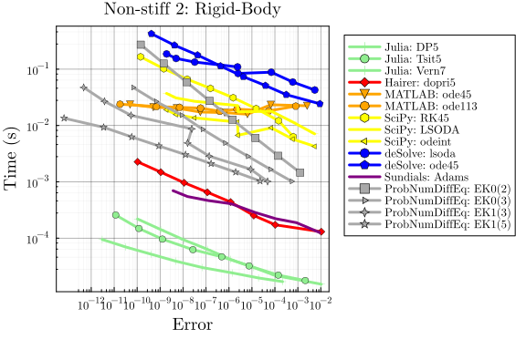
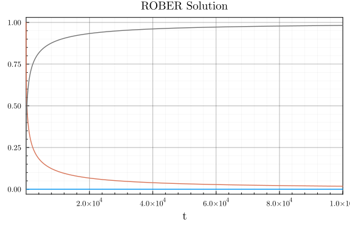
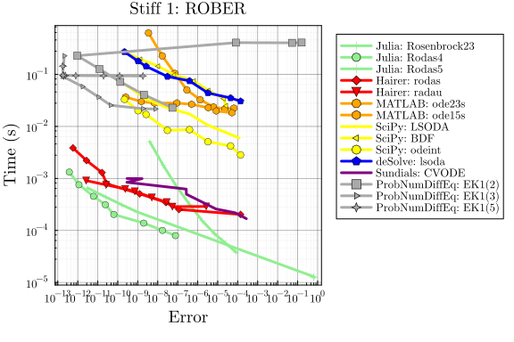
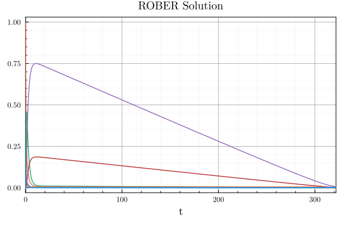
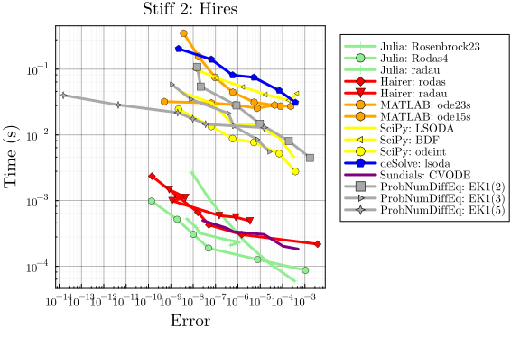

ProbNumDiffEq.jl vs. various solver packages
Adapted from SciMLBenchmarks.jl multi-language wrapper benchmark.
# Imports
using LinearAlgebra, Statistics, InteractiveUtils
using StaticArrays, DiffEqDevTools, ParameterizedFunctions, Plots, SciMLBase, OrdinaryDiffEq
using ODEInterface, ODEInterfaceDiffEq, Sundials, SciPyDiffEq, deSolveDiffEq, MATLABDiffEq, LSODA
using LoggingExtras
using ProbNumDiffEq# Plotting theme
theme(:dao;
markerstrokewidth=0.5,
legend=:outertopright,
bottom_margin=5Plots.mm,
size = (1000, 400),
)# Constants used throughout this benchmark
const DENSE = false # used to decide if we smooth or not
const SAVE_EVERYSTEP = false;_COLORS = Dict(
"Julia" => :LightGreen,
"Julia (static)" => :DarkGreen,
"Hairer" => :Red,
"MATLAB" => :Orange,
"SciPy" => :Yellow,
"deSolve" => :Blue,
"Sundials" => :Purple,
"liblsoda" => :Purple,
"ProbNumDiffEq" => :Darkgray,
)
tocolor(n) = _COLORS[split(n, ':')[1]];deprecated_filter(log_args) = !contains(log_args.message, "deprecated")
filtered_logger = ActiveFilteredLogger(deprecated_filter, global_logger());Non-Stiff Problem 1: Lotka-Volterra
f = @ode_def LotkaVolterra begin
dx = a*x - b*x*y
dy = -c*y + d*x*y
end a b c d
p = [1.5, 1, 3, 1]
tspan = (0.0, 10.0)
u0 = [1.0, 1.0]
prob = ODEProblem{true,SciMLBase.FullSpecialize()}(f,u0,tspan,p)
staticprob = ODEProblem{false,SciMLBase.FullSpecialize()}(f,SVector{2}(u0),tspan,SVector{4}(p))
sol = solve(prob,Vern7(),abstol=1/10^14,reltol=1/10^14,dense=false)
test_sol = sol
plot(sol, title="Lotka-Volterra Solution", legend=false)
_setups = [
"Julia: DP5" => Dict(:alg=>DP5())
"Julia: Tsit5" => Dict(:alg=>Tsit5())
"Julia: Vern7" => Dict(:alg=>Vern7())
"Hairer: dopri5" => Dict(:alg=>ODEInterfaceDiffEq.dopri5())
"MATLAB: ode45" => Dict(:alg=>MATLABDiffEq.ode45())
"MATLAB: ode113" => Dict(:alg=>MATLABDiffEq.ode113())
"SciPy: RK45" => Dict(:alg=>SciPyDiffEq.RK45())
"SciPy: LSODA" => Dict(:alg=>SciPyDiffEq.LSODA())
"SciPy: odeint" => Dict(:alg=>SciPyDiffEq.odeint())
"deSolve: lsoda" => Dict(:alg=>deSolveDiffEq.lsoda())
"deSolve: ode45" => Dict(:alg=>deSolveDiffEq.ode45())
"Sundials: Adams" => Dict(:alg=>Sundials.CVODE_Adams())
"ProbNumDiffEq: EK0(2)" => Dict(:alg=>EK0(order=2, smooth=DENSE))
"ProbNumDiffEq: EK0(3)" => Dict(:alg=>EK0(order=3, smooth=DENSE))
"ProbNumDiffEq: EK1(3)" => Dict(:alg=>EK1(order=3, smooth=DENSE))
"ProbNumDiffEq: EK1(5)" => Dict(:alg=>EK1(order=5, smooth=DENSE))
]
labels = first.(_setups)
setups = last.(_setups)
colors = tocolor.(labels) |> permutedims
abstols = 1.0 ./ 10.0 .^ (6:13)
reltols = 1.0 ./ 10.0 .^ (3:10)
wp = with_logger(filtered_logger) do
WorkPrecisionSet(
[prob, staticprob], abstols, reltols, setups;
names = labels,
#print_names = true,
appxsol = [test_sol, test_sol],
dense = DENSE,
save_everystep = SAVE_EVERYSTEP,
numruns = 10,
maxiters = Int(1e7),
timeseries_errors = false,
verbose = false,
)
end
plot(
wp,
title = "Non-stiff 1: Lotka-Volterra",
color = colors,
xticks = 10.0 .^ (-16:1:5),
yticks = 10.0 .^ (-6:1:5),
)
Non-Stiff Problem 2: Rigid Body
f = @ode_def RigidBodyBench begin
dy1 = -2*y2*y3
dy2 = 1.25*y1*y3
dy3 = -0.5*y1*y2 + 0.25*sin(t)^2
end
u0 = [1.0;0.0;0.9]
tspan = (0.0, 10.0)
prob = ODEProblem{true,SciMLBase.FullSpecialize()}(f,u0,tspan)
staticprob = ODEProblem{false,SciMLBase.FullSpecialize()}(f,SVector{3}(u0),tspan)
sol = solve(prob,Vern7(),abstol=1/10^14,reltol=1/10^14,dense=false)
test_sol = sol
plot(sol, title="Rigid Body Solution", legend=false)
_setups = [
"Julia: DP5" => Dict(:alg=>DP5())
"Julia: Tsit5" => Dict(:alg=>Tsit5())
"Julia: Vern7" => Dict(:alg=>Vern7())
"Hairer: dopri5" => Dict(:alg=>dopri5())
"MATLAB: ode45" => Dict(:alg=>MATLABDiffEq.ode45())
"MATLAB: ode113" => Dict(:alg=>MATLABDiffEq.ode113())
"SciPy: RK45" => Dict(:alg=>SciPyDiffEq.RK45())
"SciPy: LSODA" => Dict(:alg=>SciPyDiffEq.LSODA())
"SciPy: odeint" => Dict(:alg=>SciPyDiffEq.odeint())
"deSolve: lsoda" => Dict(:alg=>deSolveDiffEq.lsoda())
"deSolve: ode45" => Dict(:alg=>deSolveDiffEq.ode45())
"Sundials: Adams" => Dict(:alg=>CVODE_Adams())
"ProbNumDiffEq: EK0(2)" => Dict(:alg=>EK0(order=2, smooth=DENSE))
"ProbNumDiffEq: EK0(3)" => Dict(:alg=>EK0(order=3, smooth=DENSE))
"ProbNumDiffEq: EK1(3)" => Dict(:alg=>EK1(order=3, smooth=DENSE))
"ProbNumDiffEq: EK1(5)" => Dict(:alg=>EK1(order=5, smooth=DENSE))
]
labels = first.(_setups)
setups = last.(_setups)
colors = tocolor.(labels) |> permutedims
abstols = 1.0 ./ 10.0 .^ (6:13)
reltols = 1.0 ./ 10.0 .^ (3:10)
wp = with_logger(filtered_logger) do
WorkPrecisionSet(
[prob,staticprob], abstols, reltols, setups;
names = labels,
#print_names = true,
appxsol = [test_sol, test_sol],
dense = DENSE,
save_everystep = SAVE_EVERYSTEP,
numruns = 10,
maxiters = Int(1e7),
timeseries_errors = false,
verbose = false
)
end
plot(
wp,
title = "Non-stiff 2: Rigid-Body",
color = colors,
xticks = 10.0 .^ (-12:1:5),
yticks = 10.0 .^ (-6:1:5),
)
Stiff Problem 1: ROBER
rober = @ode_def begin
dy₁ = -k₁*y₁+k₃*y₂*y₃
dy₂ = k₁*y₁-k₂*y₂^2-k₃*y₂*y₃
dy₃ = k₂*y₂^2
end k₁ k₂ k₃
u0 = [1.0,0.0,0.0]
p = [0.04,3e7,1e4]
prob = ODEProblem{true,SciMLBase.FullSpecialize()}(rober,u0,(0.0,1e5),p)
staticprob = ODEProblem{false,SciMLBase.FullSpecialize()}(rober,SVector{3}(u0),(0.0,1e5),SVector{3}(p))
sol = solve(prob,CVODE_BDF(),abstol=1/10^14,reltol=1/10^14,dense=false)
test_sol = sol
plot(sol, title="ROBER Solution", legend=false, xlims=(1e0, 1e5))
_setups = [
"Julia: Rosenbrock23" => Dict(:alg=>Rosenbrock23())
"Julia: Rodas4" => Dict(:alg=>Rodas4())
"Julia: Rodas5" => Dict(:alg=>Rodas5())
"Hairer: rodas" => Dict(:alg=>rodas())
"Hairer: radau" => Dict(:alg=>radau())
"MATLAB: ode23s" => Dict(:alg=>MATLABDiffEq.ode23s())
"MATLAB: ode15s" => Dict(:alg=>MATLABDiffEq.ode15s())
"SciPy: LSODA" => Dict(:alg=>SciPyDiffEq.LSODA())
"SciPy: BDF" => Dict(:alg=>SciPyDiffEq.BDF())
"SciPy: odeint" => Dict(:alg=>SciPyDiffEq.odeint())
"deSolve: lsoda" => Dict(:alg=>deSolveDiffEq.lsoda())
"Sundials: CVODE" => Dict(:alg=>CVODE_BDF())
"ProbNumDiffEq: EK1(2)" => Dict(:alg=>EK1(order=2, smooth=DENSE))
"ProbNumDiffEq: EK1(3)" => Dict(:alg=>EK1(order=3, smooth=DENSE))
"ProbNumDiffEq: EK1(5)" => Dict(:alg=>EK1(order=5, smooth=DENSE))
]
labels = first.(_setups)
setups = last.(_setups)
colors = tocolor.(labels) |> permutedims
abstols = 1.0 ./ 10.0 .^ (5:12)
reltols = 1.0 ./ 10.0 .^ (2:9)
wp = with_logger(filtered_logger) do
WorkPrecisionSet(
[prob, staticprob], abstols, reltols, setups;
names = labels,
#print_names = true,
dense = DENSE,
verbose = false,
save_everystep = SAVE_EVERYSTEP,
appxsol = [test_sol, test_sol],
maxiters=Int(1e5)
)
end
plot(
wp,
title = "Stiff 1: ROBER",
color = colors,
xticks = 10.0 .^ (-16:1:4),
yticks = 10.0 .^ (-6:1:5),
)
Stiff Problem 2: HIRES
f = @ode_def Hires begin
dy1 = -1.71*y1 + 0.43*y2 + 8.32*y3 + 0.0007
dy2 = 1.71*y1 - 8.75*y2
dy3 = -10.03*y3 + 0.43*y4 + 0.035*y5
dy4 = 8.32*y2 + 1.71*y3 - 1.12*y4
dy5 = -1.745*y5 + 0.43*y6 + 0.43*y7
dy6 = -280.0*y6*y8 + 0.69*y4 + 1.71*y5 -
0.43*y6 + 0.69*y7
dy7 = 280.0*y6*y8 - 1.81*y7
dy8 = -280.0*y6*y8 + 1.81*y7
end
u0 = zeros(8)
u0[1] = 1
u0[8] = 0.0057
prob = ODEProblem{true,SciMLBase.FullSpecialize()}(f,u0,(0.0,321.8122))
staticprob = ODEProblem{false,SciMLBase.FullSpecialize()}(f,SVector{8}(u0),(0.0,321.8122))
sol = solve(prob,Rodas5(),abstol=1/10^14,reltol=1/10^14, dense=false)
test_sol = sol
plot(sol, title="ROBER Solution", legend=false)
_setups = [
"Julia: Rosenbrock23" => Dict(:alg=>Rosenbrock23())
"Julia: Rodas4" => Dict(:alg=>Rodas4())
"Julia: radau" => Dict(:alg=>RadauIIA5())
"Hairer: rodas" => Dict(:alg=>rodas())
"Hairer: radau" => Dict(:alg=>radau())
"MATLAB: ode23s" => Dict(:alg=>MATLABDiffEq.ode23s())
"MATLAB: ode15s" => Dict(:alg=>MATLABDiffEq.ode15s())
"SciPy: LSODA" => Dict(:alg=>SciPyDiffEq.LSODA())
"SciPy: BDF" => Dict(:alg=>SciPyDiffEq.BDF())
"SciPy: odeint" => Dict(:alg=>SciPyDiffEq.odeint())
"deSolve: lsoda" => Dict(:alg=>deSolveDiffEq.lsoda())
"Sundials: CVODE" => Dict(:alg=>CVODE_BDF())
"ProbNumDiffEq: EK1(2)" => Dict(:alg=>EK1(order=2, smooth=DENSE))
"ProbNumDiffEq: EK1(3)" => Dict(:alg=>EK1(order=3, smooth=DENSE))
"ProbNumDiffEq: EK1(5)" => Dict(:alg=>EK1(order=5, smooth=DENSE))
]
labels = first.(_setups)
setups = last.(_setups)
colors = tocolor.(labels) |> permutedims
abstols = 1.0 ./ 10.0 .^ (5:10)
reltols = 1.0 ./ 10.0 .^ (1:6)
wp = with_logger(filtered_logger) do
WorkPrecisionSet(
[prob, staticprob], abstols, reltols, setups;
names = labels,
#print_names = true,
dense = false,
verbose = false,
save_everystep = false,
appxsol = [test_sol, test_sol],
maxiters = Int(1e5),
numruns=100
)
end
plot(
wp,
title = "Stiff 2: Hires",
color=colors,
xticks = 10.0 .^ (-16:1:4),
yticks = 10.0 .^ (-6:1:5),
)
Appendix
Computer information:
InteractiveUtils.versioninfo()Julia Version 1.8.5
Commit 17cfb8e65ea (2023-01-08 06:45 UTC)
Platform Info:
OS: Linux (x86_64-linux-gnu)
CPU: 12 × Intel(R) Core(TM) i7-6800K CPU @ 3.40GHz
WORD_SIZE: 64
LIBM: libopenlibm
LLVM: libLLVM-13.0.1 (ORCJIT, broadwell)
Threads: 12 on 12 virtual cores
Environment:
JULIA_NUM_THREADS = auto
JULIA_STACKTRACE_MINIMAL = true